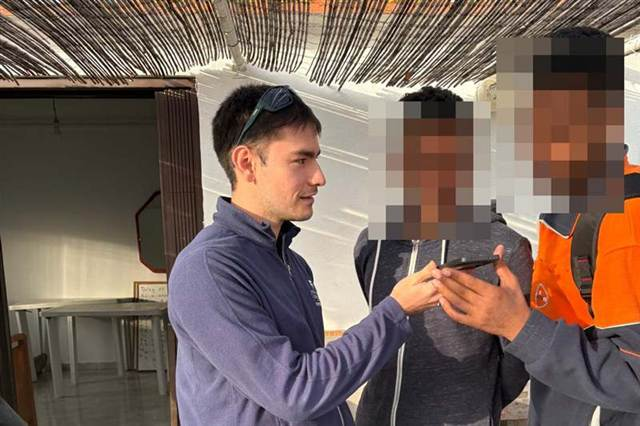
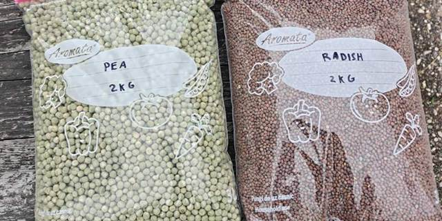

For organisations in Greece · November 2026
Invitation to pilot: low-cost homegrown microgreens
Why microgreens, and why at home
Microgreens are an extremely nutrient-dense crop, and therefore help supplement the calorie-rich but un-diverse diets catered to refugees in Greek camps.
A home-grown intervention drives cost down, gives people more autonomy and control over their diets, and allows individuals to reap the well-evidenced mental health benefits of gardening.
Video tutorials

Our videos come in the languages most spoken by refugees in Greece, and they grow the crop in the disposable boxes handed out at mealtimes. Radish is ready in about a week, pea in under two.
- English
- العربية
- فارسی
- Français
- Türkçe
- বাংলা
- Ελληνικά
Our offer

We want to bring this to more camps across Greece. Our conversations suggest poor diets are common across them, and we want more refugees to have healthy alternatives to the food that is catered.
Up to 4kg of seed, free, enough to sow about 390 boxes. Your organisation covers shipping within Greece, at most €15.
Depending on how the pilots go, we will negotiate better prices with seed suppliers and look for funding to keep the programme running. To take part, write to us at the address at the foot of this page with your organisation's name, where you work, and roughly how many households you reach.
Cost per person, post-pilot
The pilot seed is free. If your organisation then chose to run this as a sustained programme, this is what it would cost in seed, at today's prices:
€0.02 per person a day, for two 10g servings: about €0.50 a month
€0.06 of seed per radish box, which yields about 58g
€0.17 of seed per pea box: about 218g over two harvests, as it regrows
Two servings a day, one radish and one pea, at lunch and dinner, meet this share of a person's minimum daily needs under the Sphere standards:
| Vitamin | From two servings | Share of minimum |
|---|---|---|
| A | 70 μg | 13% |
| C | 12.7 mg | 31% |
| E | 4.9 mg | 62% |
| K | 41 μg | 85% |